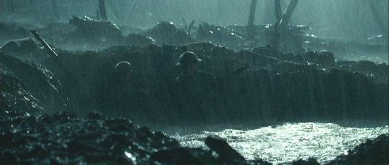

|
JULY Still
in the Vimy area, Charles's artillery unit
supports the Canadian
divisions. It keeps firing salvoes every day at
various targets, including Lens, Loison and Cité St-Émile. The pace is slower than in June, but
on some days more than four hundred salvoes are fired.
AUGUST …
The
firing continues every day, day and night. The targets
are the same. On some days the firing intensifies, as
on August 15, with more than fifteen hundred salvoes supporting the infantry's
assault on "Hill 70", and on August 21, with more
than thirteen hundred salvoes aimed mainly at Lens. The next day the battery's
position is shelled, ammunition is destroyed and a gun
damaged. The following night the gun is replaced. They have been at Rollencourt,
still in the Vimy area, for a few days.
SEPTEMBER … Charles's unit is at Liévin, north of the Vimy
area. It is a quiet month, with an average of fifty
salvoes
a day, and some days with no firing at all.
THE BATTLE OF PASSCHENDAELE

OCTOBER … The month starts just as quietly. The battery gets ready for the
Third Battle of Ypres. From October 17, lines of
wagons move towards the Ypres front, in Belgium,
about seventy-five kilometres from Liévin. The whole battery is in place by
October 20,
and the salvoes begin on enemy batteries near
Moorslide, south-east of Passchendaele. The gunners aim at the
Passchendaele church steeple to calibrate their guns.
The
orders keep coming, but the target is always the same for the
1st Canadian Heavy Battery. By shelling Moorslide, it covers
the right flank of the Canadians thrown into the Battle of
Passchendaele.
In a series
of assaults launched on October 26, twenty thousand soldiers, under heavy
fire, advance inch by inch, crater by crater. Then, on October
30, the Canadians attack Passchendaele itself with
the help of two British divisions. They reach the devastated outskirts
of the village in a violent storm and, for five days, hold on,
often stuck waist-deep in mud, under a rain of German shell
splinters. More than fifteen thousand men lose their lives in the Ypres
salient that late autumn.

NOVEMBER …
The battle rages. The battery fires salvoes at a hellish
pace, day and night, and still on Moorslide. So the support for
the infantry continues, and the firing is often in
response to "S.O.S. calls" sent by the soldiers
in the trenches or during their assaults.
 DECEMBER …
The fighting goes on for Charles's unit until December 8.
Then the 1st Canadian Heavy Battery returns, in stages, to the
Vimy area. This time the men are carried by truck. On December 12 they reach their old horse
lines at Gouy Servins. The mayor finds them
lodgings. The men rest there until the 22nd; the equipment is
cleaned and inspected. DECEMBER …
The fighting goes on for Charles's unit until December 8.
Then the 1st Canadian Heavy Battery returns, in stages, to the
Vimy area. This time the men are carried by truck. On December 12 they reach their old horse
lines at Gouy Servins. The mayor finds them
lodgings. The men rest there until the 22nd; the equipment is
cleaned and inspected.
On December 23 the unit moves to Roclincourt;
a few salvoes are fired the next day.
Charles goes on
leave for fourteen days. This time we know his
destination: Charles goes to Bordeaux. As for his unit,
it gets ready
for Christmas; a good dinner is served, and twenty salvoes are fired. On
December 26 the unit splits into two sections, one at Liévin,
the other at Vimy. They receive new guns, and
salvoes are fired to calibrate them.
|